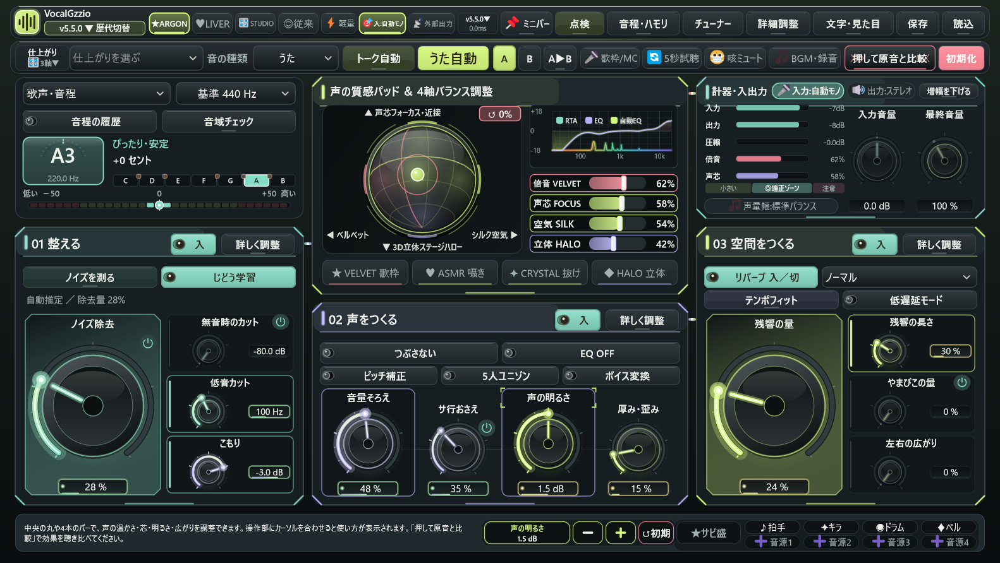
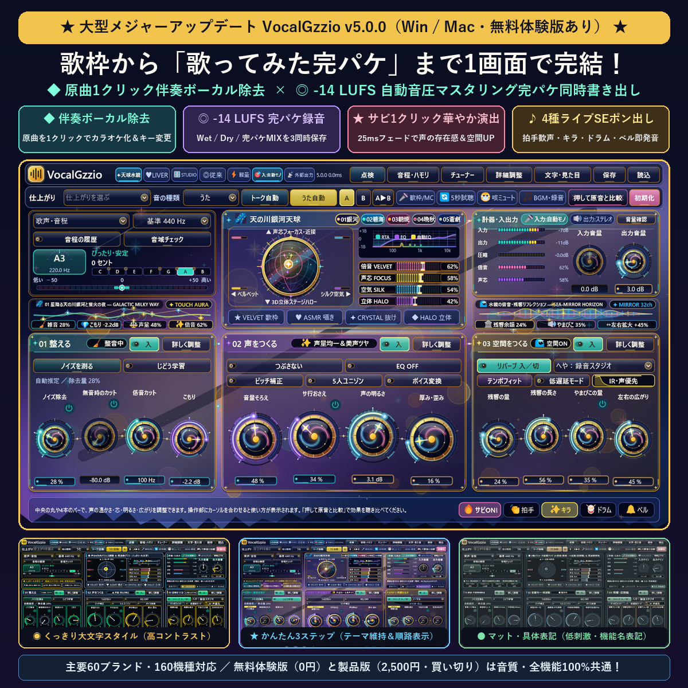
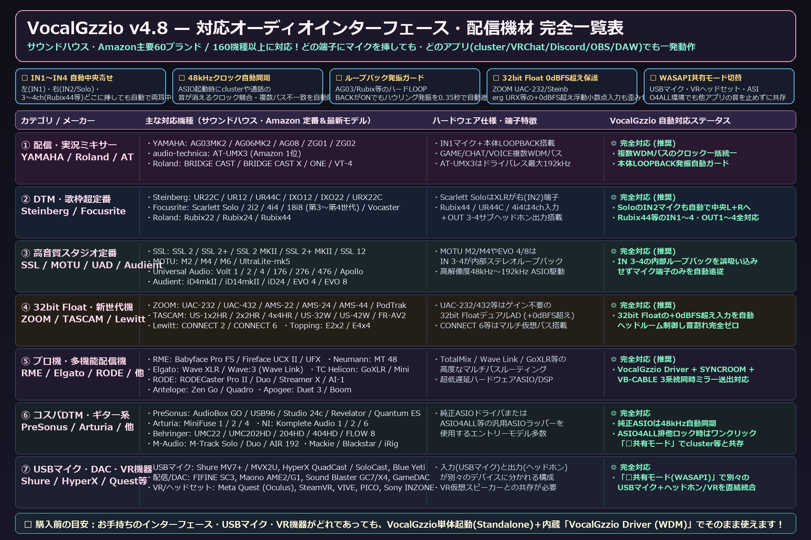

VocalGzzio 5.5.0 · Windows + Mac · Smart Sleep Ultra-Light & Live Streamer Vocal Suite
ドライバ不要のカラオケ取込も、コード追従ハモリも、SNS動画保存も。
歌枠と「歌ってみた」が圧倒的な軽さでこれ1つで完結。
防音室も複雑なDAWミキシングも不要。これ1つでOBS歌枠配信・ブラウザカラオケ取込・歌ってみた完パケ録音＆SNS動画（.mp4）書き出し・メタバース通話がすべて日本語（＆2クリック100%英語UI）で完結。
🌐アプリ別カラオケ取込、⚡1クリック音ズレ自動計測、🎹伴奏コード追従ハモリ、🎬SNS動画1クリック保存、⚡Smart Sleep超軽量化、📌配信ミニバー、⌨️裏画面ホットキー、🎧骨伝導モニター補正、🕳️声ポケット自動掘り、🎯0.08ms知能ピッチ補正搭載。



🌐アプリ別カラオケ取込 ＆ ⚡1クリック音ズレ計測
仮想ケーブル不要で Chrome/YouTube カラオケ等の音だけを直接取り込み、ボーカル除去・キー変更±6・声ポケット掘削を適用可能（二重再生フランジングも自動防止）。「⚡自動計測」で往復遅延を実測し、声と伴奏の音ズレ（±300ms）も1クリックで解消します。
🎹伴奏コード追従ハモリ ＆ 🎬SNS動画1クリック保存
伴奏のリアルタイム和音（[C][Fm][E7]等）を追尾し、J-POPの借用和音や転調でもハモリが濁りません。歌った直後に X/YouTube（16:9）や Shorts/TikTok（9:16・Before➔After比較可）用の -14 LUFS マスタリング済 .mp4 動画を直接保存できます。
⚡Smart Sleep超軽量・📌ミニバー ＆ 🎙️160機種対応
単一FFTハーモナイザ・ロックフリーF0共有・最小化時GPU 0%休止で負荷を40〜70%削減。520×115pxの「📌配信ミニバー」や裏画面ホットキー、5大風景＆歴代19世代タイムマシン、AG03/ScarlettからUSBマイク・Quest 3・clusterまで完全対応。
無料体験版（0円）と製品版（2,500円・買い切り）の違い
| 機能・項目 | 無料体験版（0円） | 製品版（2,500円・税込買い切り） |
|---|---|---|
| Smart Sleepエンジン・配信ミニバー・音ズレ補正・全19テーマ | ○ すべて同じ | ◎ すべて制限なし |
| 伴奏ボーカル除去・キー変更・完パケ録音・サビ演出・8枠SE | ○ お試し可能 | ◎ すべて制限なし |
| 連続使用時の音量制限 | 60秒ごとに0.6秒だけ音量が低下 | ◎ 音量低下なし（本番配信・録音にそのまま使用可能） |
| 設定・ノイズ学習・お気に入りテーマの自動保存＆読込 | ×（終了すると初期状態へリセット） | ◎ 完全対応（毎回起動0秒でいつもの声で歌える）＋A/B比較対応 |
| 商用利用・収益化配信・動画投稿・OS対応 | 相性確認用（公開・配信利用不可） | ◎ 商用・収益化・スパチャ歌枠・案件配信すべて自由（クレジット・報告不要）／Win＆Mac同梱（3台まで・無償アップデート対象） |
よくあるご質問（Q&A）— 歌枠配信者・活動者の方からよくいただく相談
| ご質問 | 回答 |
|---|---|
| Q1. DAW（音楽制作ソフト）がなくてもOBSだけで歌枠配信できますか？ | はい、DAW不要です！ OBSのマイク音声フィルタから「VST 2.x/3.x プラグイン（VocalGzzio）」を直接読み込むだけで仮想ケーブル不要・ゼロ遅延で直結できます。また単体起動アプリ（VocalGzzio.exe）の内蔵BGMやSEも丸ごと送りたい場合は、オーディオIF内蔵ループバックや外部仮想ケーブル（VB-CABLE / Yamaha SYNCROOM Driver 等）で連携できます。 |
| Q2. YAMAHA AG03 / AG06 や USBマイクでも使えますか？ | はい、すべて対応しています！ AG03MK2 / Scarlett / UR22C / MOTU M2 等はもちろん、AT2020USB-X / MV7+ / Yeti / QuadCast 等のUSBマイクでもそのまま使えます。AG03等の本体LOOPBACK切り忘れによるハウリングを自動遮断する安全ガードも内蔵しています。 |
| Q3. OBSやYouTubeカラオケと声のタイミングがズレるときは？ | v5.5.0の「⏱️音ズレ補正（±300ms）」で解決できます！ 「🎵BGM・録音」内のスライダーで歌声または内蔵BGMを1ms単位で遅らせてピタッと同期できます。 |
| Q4. 配信中にOBSや歌詞画面を触りながら咳ミュートやMC切替はできますか？ | はい！ 「📌ミニバー」で画面の隅に小さく常駐させるか、裏画面ホットキー（Ctrl+Shift+M 咳ミュート／F9 長押し咳ミュート／Ctrl+Shift+T 歌枠⇄MC切替）で裏画面のまま操作できます（全角かな入力中でも誤爆しません）。 |
主要60ブランド・160機種以上のインターフェース＆購入目安
| 用途・予算帯 | おすすめ代表機種 | VocalGzzio v5.5.0 自動対応機能 |
|---|---|---|
| 🔰 1万円前後・USBマイク単体で手軽に | AT2020USB-XP / HyperX QuadCast / Blue Yeti / Shure MV7+ / Behringer UMC22 / M-Audio Solo / FIFINE SC3 | OBS VST3直接読込または「🌐全アプリ共存・共有モード」1クリックで他アプリの音を止めずに即動作 |
| 🎤 歌枠・雑談配信（1.5〜3万円台） | YAMAHA AG03MK2・AG06MK2 / audio-technica AT-UMX3 / Steinberg IXO12・UR22C / Elgato Wave XLR | 本体LOOPBACKスイッチ切り忘れ時のハウリング発振を0.35秒で自動検知し、耳への返しだけを安全ミュート |
| 🎸 歌ってみた宅録・DTM（2〜5万円台） | Focusrite Scarlett Solo・2i2 (Gen4) / MOTU M2・M4 / SSL 2 MKII / UA Volt 2 / Roland Rubix24・44 / Audient iD4・iD14 | Scarlett Soloの右ch（IN 2）マイクやRubix44等の4ch入力を自動追尾し、MOTUのIN 3-4ループバックを自動除外して中央L+Rへ配置 |
| 🚀 32-bit Float・ハイエンド機 | ZOOM UAC-232・UAC-432 / Steinberg URX22C・44C / RME Babyface Pro FS・Fireface / Apogee / Antelope / Neumann MT 48 | 0dBFS（|x|>1.0）超えの32bit Float入力を歪みなく自動パッド正規化。最大192kHzから48kHz配信バスへ高速リサンプリング |
| 🥽 VRメタバース・FPSゲーム通話 | Meta Quest 3・3S・2・Pro / Valve Index / VIVE / PICO 4 / Roland BRIDGE CAST / Sound Blaster GC7 / SteelSeries GameDAC | 「🛠cluster・通話 音消え一発修復」でWindows通信ダッキングや排他ロックを自動解除し、ワールド音と美声VCを完全両立 |
配布と対応環境
Windows 10 / 11の64ビット版で、VST3プラグインおよび単体起動アプリ（追加VC++ランタイム不要のクリーン構成）を利用できます。なお、Windows 11 の最新カーネル保護・署名審査への適合と既定スピーカー書き換わり防止（安全性最優先）に万全を期すため、独自仮想ドライバの同梱は次期以降のロードマップへ一旦見送り、v5.5.0ではドライバ不要の「🌐アプリ別カラオケ音声取込」を新搭載したほか、OBS 標準 VST3 プラグイン直接読込・オーディオIF内蔵ループバック・外部仮想ケーブル（VB-CABLE / Yamaha SYNCROOM Driver 等）によるゼロ遅延連携をご案内しております（v4.7〜v5.4.1をご利用中の方がv5.5.0へ上書き更新されても、保存済みの設定・ノイズ学習・セトリはすべてそのまま引き継がれます）。Mac版はmacOS 11以降、Appleシリコン／Intel両対応で、VST3・AU・単体起動アプリとインストーラーを同梱しています（※v5.5.0のアプリ別カラオケ取込・裏画面ホットキー・SNS用.mp4直接書き出しはWindows 10/11版先行機能となります。Mac版の導入・初回起動時のセキュリティ確認手順はこちら）。
製品版（2,500円買い切り・Win/Mac同梱）はBOOTHから取得できます（購入済みの方は購入履歴から追加料金なしで最新版v5.5.0をダウンロード可能）。まずは0円の無料体験版で、ご自身の声と機材での変化をお確かめください。